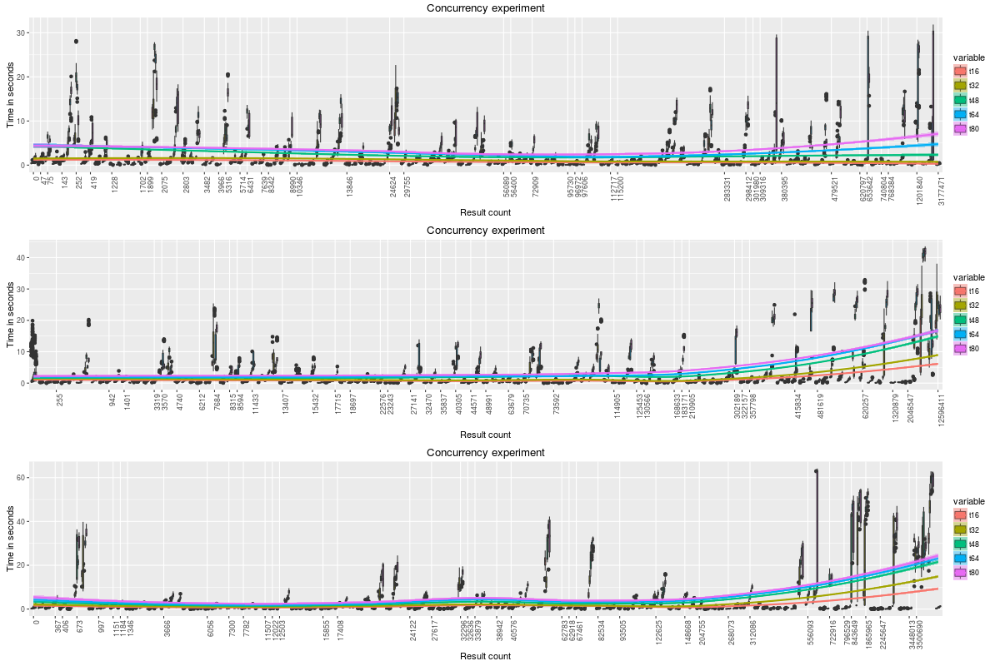
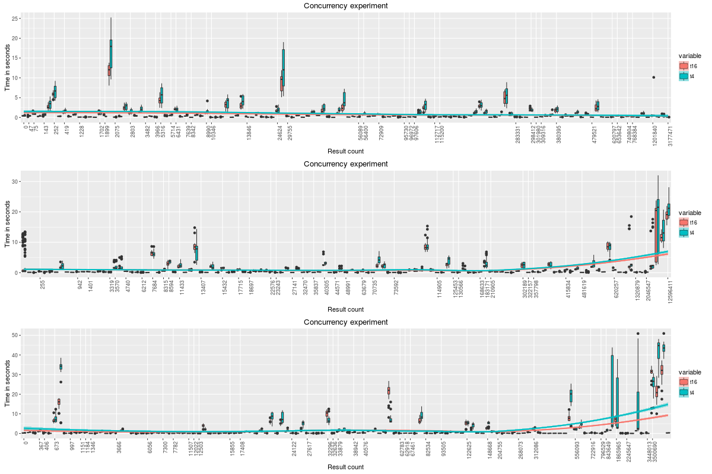

GeoMesa Concurrent Queries
Table of Contents
1 Setup
1.1 Imports
library(ggplot2) library(reshape2)
1.2 Functions to load result
load.results <- function(f) {
data <- read.csv(f,sep=",",
header=F,
colClasses=c("character", "numeric", "numeric"),
stringsAsFactors = F)
colnames(data) <- c("id", "elapsed", "count")
data$id <- as.character(data$id)
data
}
multiplot <- function(..., plotlist=NULL, file, cols=1, layout=NULL, title="") {
library(grid)
# Make a list from the ... arguments and plotlist
plots <- c(list(...), plotlist)
numPlots = length(plots)
# If layout is NULL, then use 'cols' to determine layout
if (is.null(layout)) {
# Make the panel
# ncol: Number of columns of plots
# nrow: Number of rows needed, calculated from # of cols
layout <- matrix(seq(1, cols * ceiling(numPlots/cols)),
ncol = cols, nrow = ceiling(numPlots/cols))
}
if (numPlots==1) {
print(plots[[1]])
} else {
# Set up the page
grid.newpage()
pushViewport(viewport(layout = grid.layout(nrow(layout), ncol(layout))))
# Make each plot, in the correct location
for (i in 1:numPlots) {
# Get the i,j matrix positions of the regions that contain this subplot
matchidx <- as.data.frame(which(layout == i, arr.ind = TRUE))
print(plots[[i]], vp = viewport(layout.pos.row = matchidx$row,
layout.pos.col = matchidx$col))
}
}
}
analyzerun <- function(seed, t, basedir = "~/results/sunday/") {
v <- paste('t', t, sep='')
f <- paste(basedir, t, "/", seed, '.log.all.tsv', sep="")
d <- load.results(f)
dcall <- data.frame(id=d$id, t=d$elapsed, count=d$count)
colnames(dcall) <- c("id", v, "count")
dcallsorted <- dcall[order(dcall$count),]
dcallsorted$id <- factor(d$count, levels = unique(dcallsorted$count))
melt(dcallsorted, id.vars=c("id"), measure.vars=c(v))
}
plotrun <- function(dcmelt1) {
labels = unique(dcmelt1$id)
breaks = labels[seq(1, length(labels), by = 3)]
ggplot(dcmelt1, aes(factor(id),value,fill=variable)) +
geom_boxplot() +
theme(axis.text.x = element_text(angle = 90, hjust = 1)) +
scale_x_discrete(breaks = breaks) +
geom_smooth(aes(x = as.integer(id), y=value,color=variable),method=loess) +
labs(title = "Concurrency experiment", x = "Result count", y = "Time in seconds")
}
2 Description
I analyzed concurrent queries using a GeoMesa Accumulo instance with the following characteristics.
2.1 Hardware
- Tablet servers
- 10 r3.xlarge
- JVM heap 20GB
- Accumulo data cache 14GB
- Client machines
- 4 m4.16xlarge
- JVM Heap 48GB
2.2 Data
Data consisted of 7 months of simulated ADS-B data.
- 4.67B points
- 460 total tables in z3
- 46 tablets per tserver
2.3 Queries
- The query drivers were run concurrently on the client machines. Drivers were initialized with a seed and number of queries to run concurrently. They then generated 128 random spatio-temporal queries of varying spatial size and temporal duration and executed all queries. All experiments were repeated ten times. Concurrency levels tested include 16 (4 per JVM), 32 (8 per JVM), 48 (12 per JVM), 64 (16 per JVM), and 80 (20 per JVM).
- A test was run with 3 JVMs executing 20 concurrent queries while 1 JVM was executing 4 concurrent queries. The intent is to see if there was any impact from client side thread contention.
- A test was run with geomesa.scan.ranges.target set to 10 (from a default of 2000) to evaluate the impact of number of ranges.
3 Analysis
3.1 (1) All concurrency levels
Each plot below shows all the time in seconds for all concurrency levels for a given seed sorted by number of results.

3.2 3x20 client JVMS and 1x4 client JVM
The next plot shows the results from running just one JVM with 4 concurrent queries and 3 JVMs with 20 concurrent queries. The plots are against the results for 4 client JVMs with 4 concurrent queries each. The point of this plot is to reduce the impact of client side thread contention. As can be seen, the 4-concurrent client with 64 total concurrent queries performed the same as a 4-concurrent client with 16 total concurrent queries.

3.3 Minimizing the scan ranges
This experiment involved setting geomesa.scan.ranges.target=10 which effectively limits the total number of scan ranges at the cost of more false positives to prune client side. It is compared to default scan ranges of 2000.
